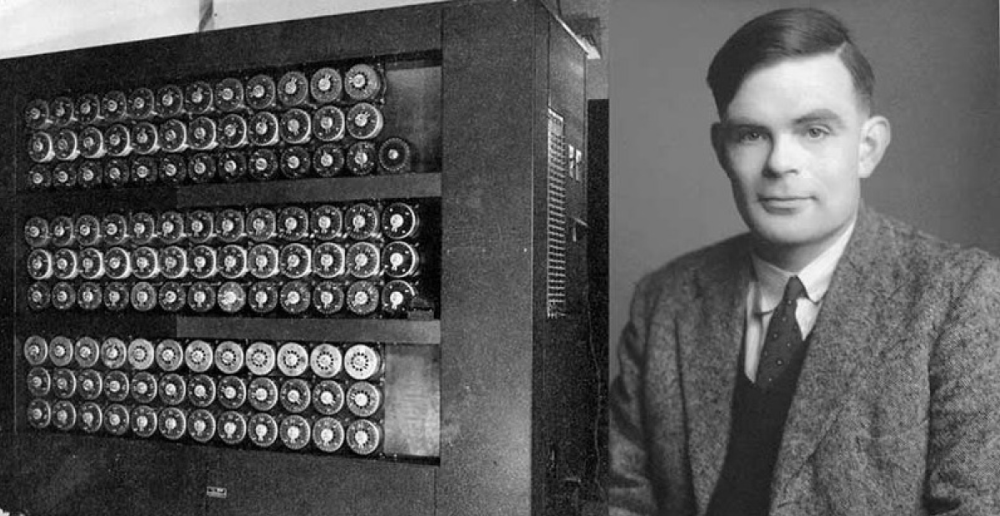
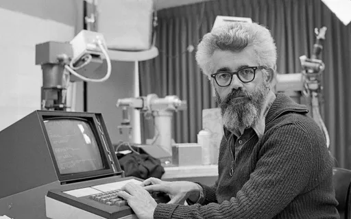
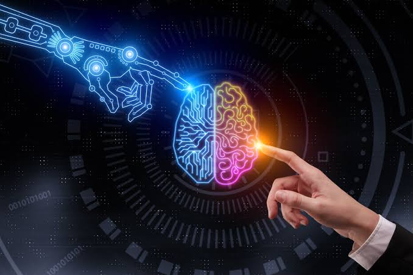
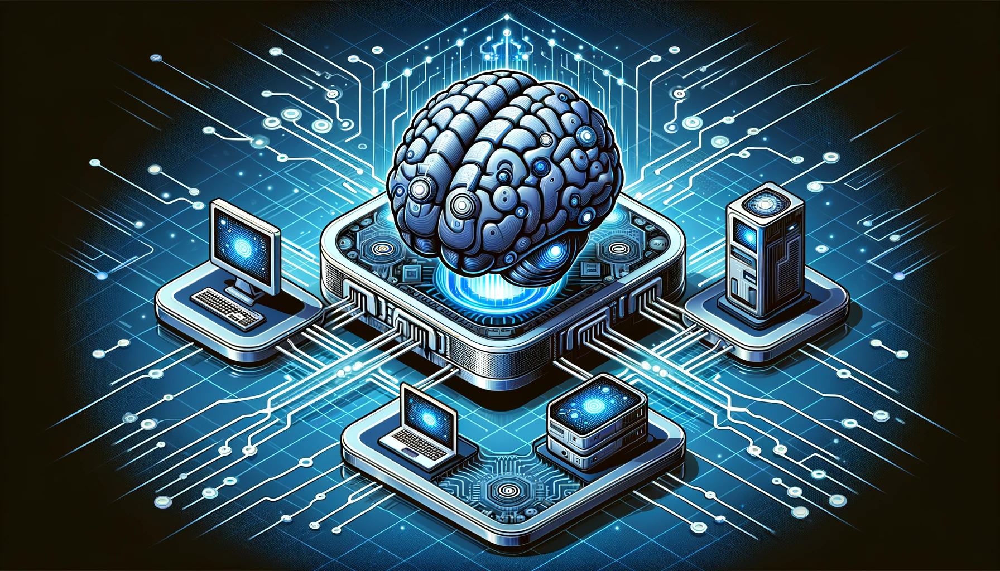
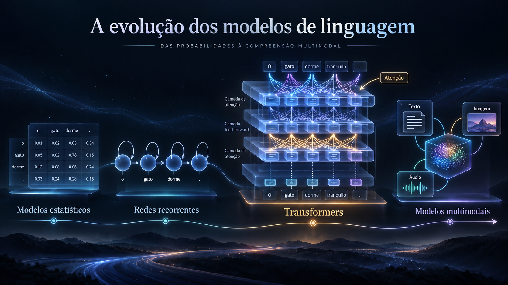

Introdução
A Inteligência Artificial pode parecer uma tecnologia recente, principalmente devido à popularização de
ferramentas capazes de gerar textos, imagens, vídeos e outros conteúdos. Entretanto, sua história
começou muitas décadas antes. O desenvolvimento da IA está relacionado à evolução da matemática, da
lógica, da computação e às tentativas de compreender como determinadas capacidades humanas poderiam ser
reproduzidas por máquinas.
Durante o século XX, pesquisadores começaram a discutir se computadores
poderiam realizar tarefas que normalmente exigiriam inteligência humana, como resolver problemas,
reconhecer padrões, compreender informações e tomar decisões. Naquele período, os computadores ainda
eram extremamente limitados quando comparados aos equipamentos atuais, mas essas pesquisas estabeleceram
conceitos importantes para o desenvolvimento da Inteligência Artificial.
Ao longo das décadas
seguintes, a área passou por períodos de grande entusiasmo e também por momentos em que o interesse e os
investimentos diminuíram. Conforme os computadores se tornaram mais poderosos e grandes quantidades de
dados passaram a estar disponíveis, novas técnicas puderam ser desenvolvidas e aplicadas.
Essa
evolução levou ao crescimento do Machine Learning, posteriormente ao avanço do Deep
Learning e, mais recentemente, à popularização da Inteligência Artificial Generativa.
Atualmente, sistemas de IA estão presentes em diversas áreas e fazem parte de muitas tecnologias
utilizadas diariamente.
1950 — Alan Turing e o início das discussões

Um dos acontecimentos importantes para a história da Inteligência Artificial ocorreu em 1950, quando o
matemático e cientista da computação britânico Alan Turing publicou o artigo “Computing Machinery and
Intelligence”. O trabalho começava discutindo uma questão que se tornaria fundamental para a
área: seria possível considerar que uma máquina pensa?
Para explorar essa questão, Turing descreveu
um experimento conhecido como “jogo da imitação”, que posteriormente se tornou popularmente conhecido
como Teste de Turing. Nesse experimento, uma pessoa mantém uma conversa por meio de mensagens sem saber
se está interagindo com outro ser humano ou com uma máquina. Caso a máquina consiga produzir respostas
que dificultem essa identificação, ela demonstra um comportamento que pode ser considerado semelhante ao
humano naquele contexto.
A importância da proposta não estava apenas em determinar se uma máquina
realmente possuía inteligência, mas também em estabelecer uma maneira prática de discutir e avaliar o
comportamento de sistemas computacionais.
As contribuições de Alan Turing para a computação foram
muito além da Inteligência Artificial. Seus trabalhos sobre computação e algoritmos ajudaram a
estabelecer fundamentos importantes da Ciência da Computação moderna. Por isso, Turing é considerado uma
das figuras mais importantes da história da computação e suas ideias tiveram grande influência nas
discussões que posteriormente levariam ao desenvolvimento da Inteligência Artificial.
1956 — O nascimento da Inteligência Artificial como área

Em 1956 ocorreu um dos principais acontecimentos da história da Inteligência Artificial: o Dartmouth
Summer Research Project on Artificial Intelligence. O encontro reuniu pesquisadores interessados
em estudar como máquinas poderiam realizar atividades relacionadas à inteligência, aprendizagem e
resolução de problemas.
Entre os pesquisadores envolvidos estava o cientista da computação John
McCarthy, que utilizou a expressão “Artificial Intelligence” para definir esse novo campo de
pesquisa. Por esse motivo, o encontro realizado em Dartmouth é frequentemente considerado um dos marcos
do estabelecimento da Inteligência Artificial como uma área acadêmica.
Naquela época, existia grande
expectativa sobre o potencial dos computadores. Pesquisadores acreditavam que diversas características
relacionadas à inteligência poderiam ser descritas de maneira suficientemente precisa para serem
simuladas por máquinas.
Nos anos seguintes, começaram a surgir programas capazes de solucionar
determinados problemas matemáticos, trabalhar com lógica e realizar tarefas específicas. Apesar das
limitações dos computadores disponíveis naquele período, esses experimentos demonstraram que máquinas
poderiam executar atividades que anteriormente pareciam depender exclusivamente da inteligência
humana.
Entretanto, muitos dos desafios da inteligência eram mais complexos do que inicialmente se
imaginava. As limitações de processamento, armazenamento e disponibilidade de dados dificultaram o
desenvolvimento de sistemas mais avançados. Mesmo assim, as pesquisas realizadas nesse período
estabeleceram importantes fundamentos para as décadas seguintes.
1959 - A evolução do Machine Learning

Durante a evolução da Inteligência Artificial, pesquisadores começaram a desenvolver métodos que
permitiam aos computadores identificar padrões a partir de dados. Essa abordagem ficou conhecida como
Machine Learning, ou Aprendizado de Máquina.
Em sistemas tradicionais, um programador
normalmente define diversas regras que determinam como o programa deve se comportar. No Machine
Learning, o processo pode ser diferente: algoritmos analisam exemplos e dados para encontrar
relações e padrões que possam ser utilizados para realizar previsões ou classificações.
Com o
crescimento da capacidade de processamento dos computadores e o aumento da quantidade de informações
digitais disponíveis, técnicas de Machine Learning passaram a ser utilizadas em uma variedade cada vez
maior de problemas.
Esses sistemas podem, por exemplo, analisar mensagens para identificar spam,
recomendar filmes e músicas com base no comportamento dos usuários, detectar padrões em transações
financeiras ou ajudar programas a reconhecer determinados elementos presentes em uma imagem.
O
Machine Learning tornou-se uma das áreas mais importantes dentro da Inteligência Artificial
moderna. Muitas tecnologias utilizadas atualmente possuem algum tipo de modelo de aprendizado de máquina
funcionando nos bastidores.
Seu desenvolvimento também abriu caminho para técnicas mais avançadas.
Entre elas está o Deep Learning, que utiliza redes neurais com diversas camadas e se tornou
especialmente importante para tarefas envolvendo grandes quantidades de dados.
Década de 2010 — O crescimento do Deep Learning

Durante a década de 2010, o Deep Learning passou a ocupar uma posição de grande destaque no
desenvolvimento da Inteligência Artificial. Essa abordagem utiliza redes neurais artificiais com
múltiplas camadas capazes de aprender representações cada vez mais complexas das informações fornecidas
durante o treinamento.
As redes neurais já eram estudadas há bastante tempo, mas durante muitos anos
existiram limitações que dificultavam seu uso em problemas de grande escala. O aumento da capacidade
computacional, a disponibilidade de grandes conjuntos de dados e a utilização de GPUs para realizar cálculos contribuíram significativamente
para o avanço dessas técnicas.
Um importante momento ocorreu em 2012, quando uma rede neural
conhecida como AlexNet apresentou resultados de grande destaque na competição de reconhecimento de
imagens ImageNet. Esse acontecimento ajudou a demonstrar o potencial das redes neurais profundas para
tarefas de visão computacional e contribuiu para aumentar o interesse pelo Deep Learning.
Nos
anos seguintes, redes neurais passaram a apresentar resultados importantes em reconhecimento de imagens,
reconhecimento de fala, tradução automática, processamento de linguagem natural e diversas outras
áreas.
O Deep Learning também possibilitou o desenvolvimento de modelos cada vez maiores e
mais complexos. Com isso, pesquisadores começaram a criar sistemas capazes de trabalhar com enormes
quantidades de textos, imagens e outros tipos de informações.
Muitas das tecnologias modernas de
Inteligência Artificial são resultado dessa evolução. O desenvolvimento das redes neurais profundas
também foi fundamental para os avanços que posteriormente permitiram o crescimento dos grandes modelos
de linguagem e da Inteligência Artificial Generativa.
2017 - Transformers e a evolução dos modelos de linguagem

Em 2017, pesquisadores apresentaram uma arquitetura de rede neural chamada Transformer. Essa
arquitetura
trouxe uma nova maneira de trabalhar com sequências de informações e se tornou especialmente importante
para o processamento de linguagem natural.
Um dos principais elementos dessa arquitetura é o mecanismo de atenção, que permite ao modelo considerar
diferentes partes de uma sequência ao processar informações. Essa abordagem possibilitou melhorias
significativas no treinamento de modelos capazes de trabalhar com linguagem.
Nos anos seguintes, os Transformers passaram a servir como base para diversos modelos de
linguagem. Com
grandes quantidades de dados e capacidade computacional, tornou-se possível desenvolver modelos com
bilhões de parâmetros capazes de realizar diferentes tarefas relacionadas à linguagem.
Esses avanços contribuíram para o surgimento dos chamados Large Language Models, ou LLMs, modelos
capazes de processar e gerar linguagem natural. Posteriormente, tecnologias baseadas em
Transformers
também passaram a ser utilizadas em outras áreas além do texto.
Década de 2020 — A popularização da IA Generativa
Na década de 2020, a Inteligência Artificial Generativa ganhou grande destaque e passou a fazer parte do
cotidiano de milhões de pessoas. Esse tipo de IA é capaz de gerar novos conteúdos a partir de padrões
aprendidos durante seu treinamento, incluindo textos, imagens, códigos, músicas, áudios e vídeos.
Os grandes modelos de linguagem, conhecidos como LLMs,
são um exemplo dessa evolução.
Esses modelos são treinados utilizando grandes quantidades de dados e conseguem trabalhar com linguagem
natural, permitindo que usuários interajam com sistemas de IA utilizando perguntas e instruções escritas de
maneira semelhante a uma conversa.
Além dos modelos de linguagem, também surgiram modelos especializados na geração de imagens, áudio e
vídeo. Com isso, a Inteligência Artificial começou a ser utilizada não apenas para analisar ou
classificar informações, mas também como uma ferramenta para auxiliar na criação de novos conteúdos.
A IA Generativa passou a ser aplicada em diferentes setores. Na programação, pode auxiliar na geração e
explicação de códigos. Na educação, pode ajudar na criação de materiais e explicações. Empresas também
passaram a utilizar essas tecnologias em atendimento, análise de documentos, automação de tarefas e
desenvolvimento de novos produtos.
Essa popularização também aumentou as discussões sobre os desafios relacionados à Inteligência
Artificial, incluindo confiabilidade das informações, privacidade, direitos autorais, segurança, vieses
e impactos no mercado de trabalho.
A história da Inteligência Artificial continua sendo construída. Novos modelos, técnicas e aplicações
são desenvolvidos constantemente, fazendo da IA uma das áreas de maior transformação dentro da
tecnologia contemporânea.